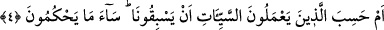
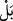
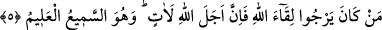

4. Yoksa kötülükleri yapanlar bizden kaçabileceklerini mi sandılar? Ne kadar
kötü (ne yanlış) hüküm veriyorlar!
“Yoksa kötülükleri” yâni küfür ve masiyetleri “yapanlar bizden kaçabileceklerini”
bizim, kendilerine yetişip onları cezâlandıramayacağımızı “mi sandılar?”
Kuşkusuz “amel” kelimesi, kalp ve âzâlarla işlenen fiillerin hepsini içine alır.
“Sebak” kelimesi de yürüyüşte veya yarışta öne geçmeyi ifâde eder. Sonra bu fiil öne
geçmenin her çeşidi için kullanılmıştır. Yani, onlar bizi geçeceklerini, bizi âciz
bırakacaklarını mı sandılar; işledikleri bu kötülüklerin cezâsını vermeye kâdir
olamayacağımızı mı zannettiler? demektir.
“bizi geçeceklerini” ifâdesi, müsned ve müsned-i ileyhi ihtivâ ettiği için “zannetti”
fiilinin iki mef’ûlü yerine geçmiştir. “__WORD__ (yoksa)” edatı munkatıa olup “ ” mânâsına
kullanılmıştır. Daha önce geçen “hemze” ile “ ”, önce geçen mânâyı iptal etmek için
kullanılmamıştır. Çünkü birinci zannın (hısbân) inkârı, ortadan kalkmış değildir. “__WORD__”,
intikal mânâsını ifâde etmek yâni bir tevbihten diğer bir tevbihe geçiş için
kullanılmıştır. Birinci tevbih ve azarlama, insanların imtihan olunmadan kendi hallerine
bırakılacaklarını sanmaları; ikincisi ise işledikleri kötülüklerin karşılığı olarak
cezâlandırılmayacaklarını zannetmeleridir ki her ikisi de reddedilmiştir. Onlar, her ne
kadar Allah Teâlâ’yı geçmeyi sanmasalar ve bunu nefislerinde söylemeseler de
günahlarda ısrar ettikleri ve âkıbetlerini düşünmedikleri için böyle sananlar mevkiine
konulmuşlardır. Nitekim Allah Teâlâ başka bir âyette de buna benzer şöyle buyurur:
“(O), malının kendisini ebedî kılacağını zanneder.” (el-Hümeze, 104/3)
Bu şekilde hükmetmekle “Ne kötü (ne yanlış) hüküm veriyorlar!”
Kâşifî der ki: Fütûhât’ta şöyle kayıtlıdır: Acaba günahkârlar, işledikleri günahlar
sebebiyle benim mağfiretimi ve herkese şâmil olan rahmetimi geçeceklerini mi
zannederler? Bu beğenilmeyen, hoşa gitmeyen bir hükümdür. Çünkü rahmetim, onların
gazabı gerektiren günahlarını geçmiştir.
Günahın sayılamayacak kadar çok olsa da
Allahu Teâlâ “Rahmetim gazabımı geçmiştir” buyurmuştur.
5. Kim Allah’a kavuşmayı umuyorsa, bilsin ki Allah’ın tayin ettiği o vakit elbet
gelecektir. O, her şeyi işiten ve bilendir.